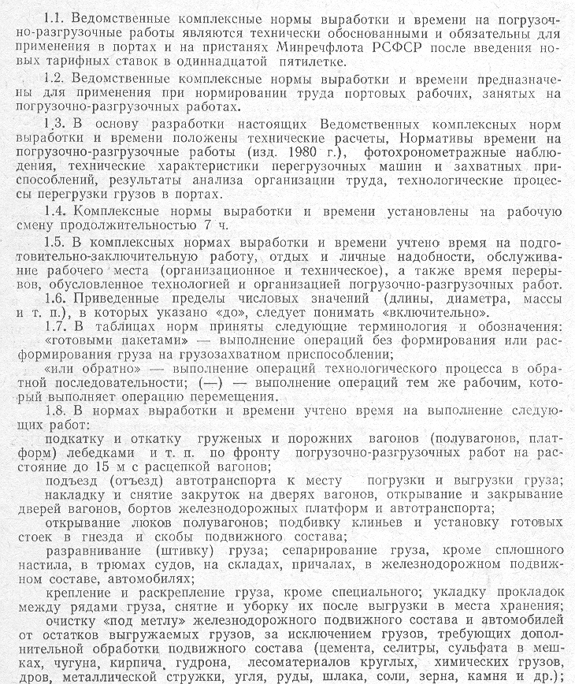
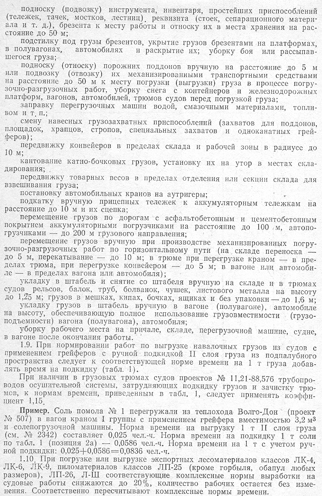
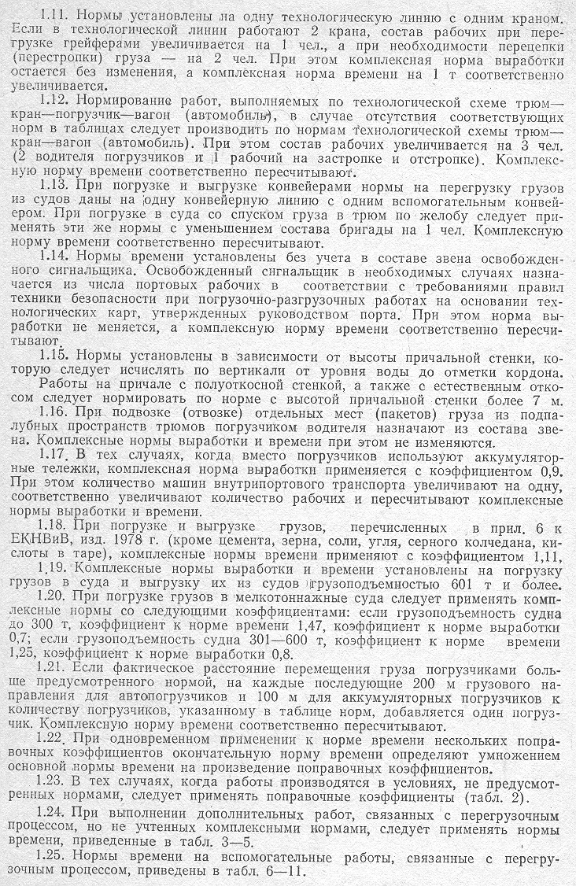

Таблица 1. Нормы времени на ручную подкидку 1т груза из подпалубного пространства, чел.-ч
Таблица 2. Поправочные коэффициенты к комплексным нормам выработки и времени
Таблица 3. Нормы времени на перемещение 1т груза на расстояние свыше предусмотренного комплексными нормами, чел.-ч
Таблица 4. Нормы времени на сортировку и погрузку-выгрузку грузов при транспортировке их в грузовых лифтах
Таблица 5. Нормы времени на укладку в штабель и снятие со штабеля грузов при высоте свыше предусмотренной комплексными нормами
Таблица 6. Нормы времени на полное открывание и закрывание люков судов и полувагонов
Таблица 7. Нормы времени на укрытие груза брезентом, чел.-ч на брезент
Таблица 8. Нормы времени на сепарирование груза, чел.-ч на 10м² сплошного сечения
Таблица 9. Нормы времени на зачистку грузовых трюмов и палуб судов после выгрузки грузов, чел.-ч на 1м² зачищаемой площади
Таблица 10. Нормы времени на взвешивание груза и другие работы
Таблица 11. Нормы времени на мытье трюмов